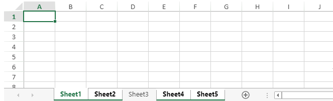

SpreadJS allows users to select multiple worksheets and perform delete or hide operations on them. The isSelected property can be used to select or deselect multiple worksheets. When multiple sheets are selected, hide or delete operations can be applied on them by using context menu options.
The below image depicts multiple selected worksheets of a workbook.

The selected state of an active sheet can also be changed by using isSelected property or SheetChanging event. When the active sheet is deselected, its view changes to activeNotSelected. The selected state of a sheet is reserved even after using the reset method.
SpreadJS provides support to change the selected state of a worksheet by using keyboard and mouse click behavior. However, the active sheet is always selected and cannot be deselected by UI behavior.
| UI Operation | Selected Sheet Tab | Unselected Sheet Tab |
|---|---|---|
| Click | Sets the clicked sheet as active sheet. |
Sets the clicked sheet as active sheet and deselects all the selected sheets. If all the sheets are selected and non active sheet is clicked, the clicked sheet becomes the active sheet and all other sheets are deselected. |
| Ctrl or Cmd + Click | Deselects the selected sheet (not in case of active sheet). | The clicked sheet is added as one of the selected sheets. |
| Shift + Click |
In the cases of a selected or unselected sheet, this operation:
|
|
Limitations
This example code sets the selected state of multiple worksheets in a workbook.
| JavaScript |
Copy Code
|
|---|---|
// get the activesheet var activeSheet = spread.getSheet(0); // Set the selected state of a particular sheet spread.getSheet(1).isSelected(true); spread.getSheet(2).isSelected(false); spread.getSheet(3).isSelected(true); spread.getSheet(4).isSelected(true); // get the selected state of a particular sheet var selectedState = spread.getSheet(3).isSelected(); |
|